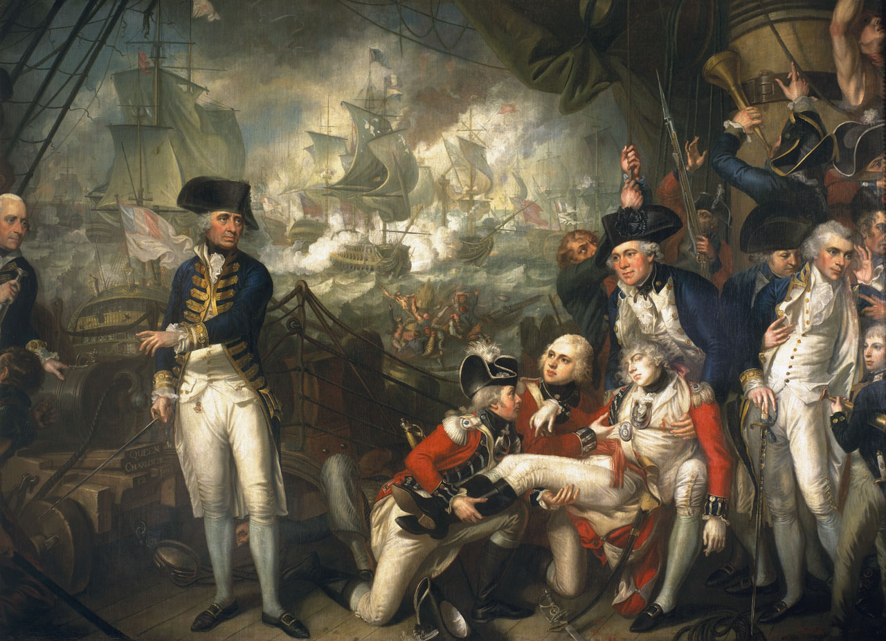
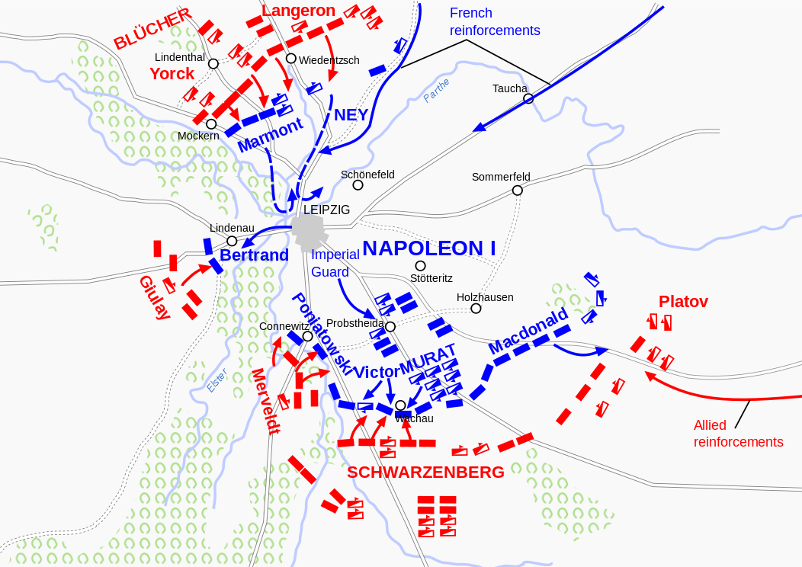
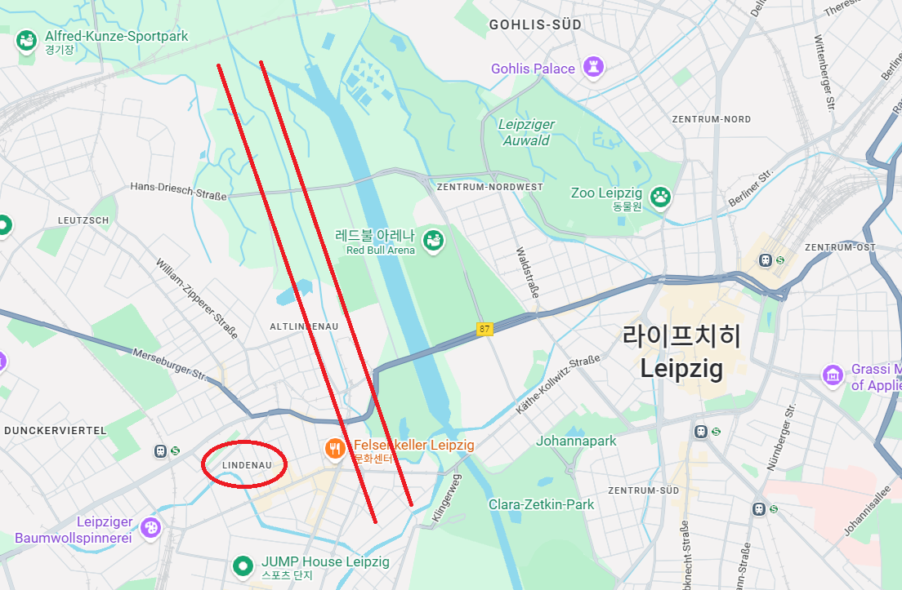
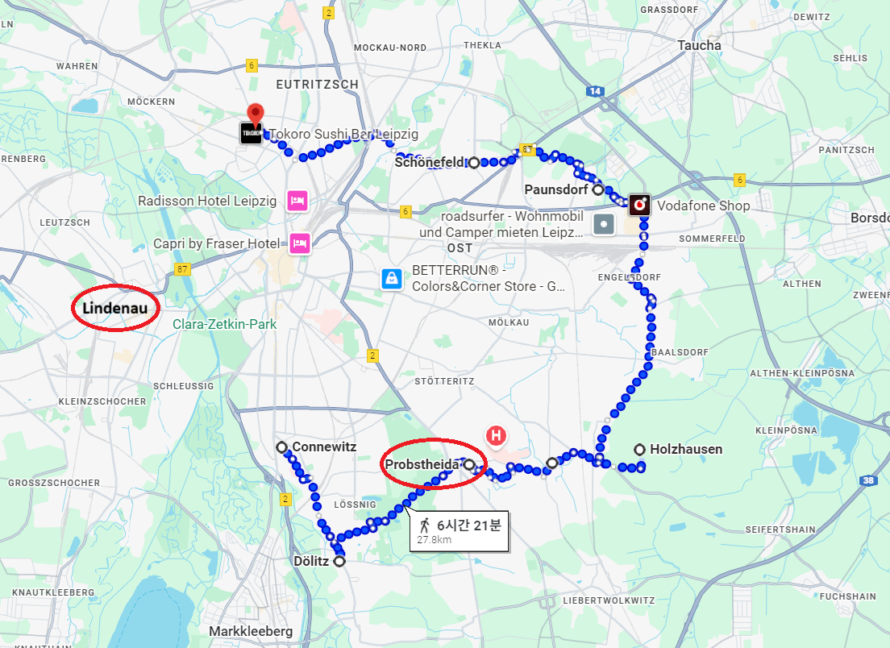

라이프치히 전투 (25) - 이해할 수 없는 결정
게시: 2025-11-24T06:30:17+09:00
17일 낮에 후퇴를 결정한 나폴레옹이 즉각 후퇴 명령을 내리지 않고 자정이 넘도록 꾸물거린 것도 어떻게 생각하면 이해가 가는 일입니다. 벌건 대낮에 적군이 훤히 지켜보고 있는 가운데 후퇴를 할 수는 없으니까요. 아마 그랬다면 가뜩이나 수적 우세를 가진 연합군의 기병대가 신이 나서 쫓아와 후퇴하는 그랑다르메를 괴롭혔을 것입니다. 그래서 과거 러시아군도 아일라우 전투 때나 보로디노 전투 때 모두 밤의 장막을 틈타 몰래 후퇴했었습니다. 그러니 나폴레옹도 어둠이 짙게 깔릴 때까지 기다렸을 수도 있습니다. 그러나 18일 새벽 2시에 나폴레옹이 내린 명령은 후퇴와는 거리가 다소 있었습니다. 남쪽 전선의 각 부대에게 후퇴를 하긴 하되, 라이프치히 쪽으로 불과 몇 km 물러서라는 것이었거든요. 이는 크게 증강된 적에 비해 아군 병력은 전날 입은 피해를 보충하기에도 부족한 정도였으므로, 전선을 축소하여 방어에 더 유리하게 만드려는 조치였습니다. 즉, 18일에도 다시 한 번 싸우겠다는 뜻이었습니다. 대체 왜 나폴레옹이 17일 밤 ~ 18일 새벽 사이에 후퇴하지 않았는지에 대해서는 별다른 설명이 없으며, 부하들도 딱히 야음을 틈탄 후퇴를 권고하지 않았습니다. 가장 그럴 듯한 추측은 나폴레옹은 언제나 야간 작전을 싫어했다는 것뿐입니다. 전투이든 후퇴이든, 어둠 속에서는 각 부대들의 움직임을 관찰할 수도 없고 통신도 훨씬 어려우며, 따라서 제어도 어렵습니다. 나폴레옹처럼 스스로의 능력에 자신감을 가진 지휘관은 어둠 속의 혼란과 그 속에서 그저 운이 좋기를 기대하는 것을 매우 싫어하는 법입니다. 비슷한 이유로, 당시 제해권을 가지고 있던 영국 해군도 야간 해전은 가능한 한 회피하는 경향이 있었습니다. 가령 영국 해군의 1588년 스페인 무적함대를 격파하고 제해권을 장악한 이후 20세기가 될 때까지, 제대로 된 야간 해전은 1780년에 벌어진 로드니(George Brydges Rodney) 제독의 세인트 빈센트 곶(Cape St. Vincent) 해전이 거의 유일한 것일 정도로 야간 해전은 드물었습니다. 세인트 빈센트 곶 해전 2년 뒤인 1782년, 이번에는 하우(Richard Howe) 제독의 영국 함대가 지중해에서 프랑스 함대를 발견하고 추격했는데, 도중에 해가 지자 하우 제독은 로드니 제독과는 달리 교전을 포기할 정도로 영국 해군은 야간 해전을 회피했습니다. 정식으로 싸우면 영국 함대가 확실히 이길 수 있는데, 굳이 혼란과 운이 많이 따르는 야간 해전의 위험 부담을 감내할 필요가 없었기 때문입니다. 나폴레옹이 평소 야간 전투를 싫어한 것과 동일한 이유였습니다.

(이 그림은 보스턴 출신의 영국 화가 Mather Brown이 그린 'Lord Howe on the Deck of the Queen Charlotte'라는 그림입니다. 이 그림은 1794년 6월 1일 대서양에서 벌어진 '영광의 6월 1일' (Glorious First of June) 해전에서 기함인 HMS Queen Charlotte 갑판의 모습을 그린 것으로서, 하우 제독은 그림 왼쪽에서 두 번째, 감색 코트를 입은 사람입니다. 그림 맨 왼쪽에 반쯤 잘린 사람은 Roger Curtis 대령으로서, 당시 제독 참모(Fleet Captain)으로 하우 제독을 보좌하고 있었습니다. 이렇게 가장자리의 일부 사람들이 잘린 모습으로 그려진 것은 원래 의도한 바는 아니고, 이 그림은 원래 약간 더 큰 폭의 그림이었는데, 전시 장소를 바꾸는 과정에서 가장자리 일부를 잘라내고 더 좁은 그림으로 바꿨기 때문입니다. 이 그림의 주인공은 마치 하우 제독이 아니라 오른쪽에 쓰러진 꽃미남으로 보이는데, 그 젊은이는 사실 해군이 아니라 영국 육군 소속 네빌(Nevile) 중위라는 사람으로서, 부족한 해병대를 보충하기 위해 탑승한 육군 보병 연대 소속이었습니다. 그는 탑승 목적인 적함으로의 승선 전투를 벌여보지도 못하고 프랑스 해군의 대포알에 맞아 전사했으므로, 저렇게 아름다운 모습은 아니었을 것입니다. 퀸살럿 호의 함장도 이 그림에 묘사되어 있는데, 맨 오른쪽에 왼손을 머리에 대고 있는 사람이 바로 함장 Andrew Snape Douglas입니다. 더글러스 함장도 저 때 머리에 부상을 입었기 때문에 저렇게 머리의 부상 부위에 손을 대고 있는 것입니다. 이 그림은 1794년, 그러니까 저 전투가 벌어진 직후에 그려진 것이므로 화가 브라운도 미처 예상하지 못했겠습니다만, 더글러스 함장은 저 부상이 원인이 되어 불과 3년 뒤에 사망합니다. 부검 결과 그의 뇌에서는 뇌종양이 발견되었는데, 현대 의학으로는 좀 미심쩍은 판단입니다만, 당시에는 저 때의 부상으로 인해 종양이 생겼다고들 믿었습니다.) 하지만 1813년 10월 17일의 나폴레옹은 절대 유리한 상황에 있지 않았고, 라이프치히 전투에서 사실상 패배하여 후퇴하는 처지였으므로 야음을 틈탄 후퇴를 거부한 것은 잘 이해가 가지 않는 결정입니다. 어쩌면 나폴레옹은 '그래도 혹시...'라는 생각에 다음 날 하루만 더 싸워보려고 했을 수도 있습니다. 전쟁이란 누구에게나 혹독한 것이고 또 워낙 변화무쌍한 것이라서, 아군이 힘든 만큼 적군에게도 뭔가 심각한 문제가 있을 수도 있고, 어쩌면 1800년 6월의 마렝고 전투처럼 다 졌던 전투가 막판에 뒤집어지는 일이 발생할 수도 있으니까요. 어쩌면 나폴레옹은 그저 자신의 체면 때문에, 과거 러시아군이 그랬던 것처럼 어둠 속에서 몰래 도망치는 것을 견딜 수 없었던 것일지도 모릅니다. 가장 설득력 있는 이야기는 나폴레옹이 의도했던 린더나우쪽 후퇴로의 특수성 때문에, 야음을 틈탄 후퇴는 어렵다고 나폴레옹이 판단했다는 것입니다. 원래 나폴레옹이 포위될 것을 각오하면서도 라이프치히에서 연합군을 맞아 싸울 생각을 한 이유는 엘스터, 플라이서, 파르터 등의 여러 강과 시냇물이 복잡하게 얽혀 흐르는 라이프치히 일대의 지리적 특성 때문이었습니다. 그런 강과 시냇물, 그리고 그런 것들 주변에 필연적으로 함께 생기는 늪과 습지가 라이프치히를 포위할 연합군의 움직임을 방해하여 라이프치히를 차지하고 싸울 자신이 내선이동을 유리하게 해줄 것이라고 판단했던 것입니다. 그리고 그 판단이 어느 정도 적중하긴 했습니다. 그러나 이제 라이프치히에서 프랑스쪽으로 후퇴하자니, 자신이 선택했던 바로 그 지리적 특성이 자신의 발목을 잡았습니다. 바이센펠스로 향하는 길목인 린더나우 마을 주변은 원래가 군대가 행군하기엔 적합하지 않은 습지였습니다. 그래서 블뤼허나 귤라이도 린더나우 마을 공격은 성공 가능성이 없다고 보았던 것이고요. 따라서 라이프치히와 바이센펠스 사이는 일련의 둑방길(causeway)이 구축되어 있었습니다. 이 도로는 하나의 잘 닦인 고속도로 같은 것이 아니라, 군데군데 습지와 개울로 끊어진 길을 듬성듬성 둑을 쌓아 느슨하게 연결한 것으로서, 어둠 속에서는 까딱 길을 잃기도 쉬웠고, 무엇보다 플라이서강과 엘스터강을 건너야 이 런더나우 둑방길로 진입할 수 있었습니다. 나폴레옹은 어둠 속에서 그런 길로 대군을 이끌고 후퇴하는 것은 바라지 않았을 수 있습니다.

(이건 라이프치히 전투 첫날 상황도입니다만, 라이프치히에서 지도 왼쪽의 린더나우에 가기 위해서는 먼저 플라이서강과 엘스터강을 차례로 건너야 합니다.)

(현대의 엘스터강은 1813년과는 많이 바뀌었습니다. 엘스터강의 범람을 막기 위해 많은 공사가 이루어졌고, 그래서 엘스터강은 린더나우 근처에서는 지도에 표시된 저 두 줄의 붉은 평행선 사이로 흐르는 좁은 강으로 정리되었습니다. 그 오른쪽에 보이는 넓은 운하 같은 것은 Elsterflutbett (영어로는 Elster flood bed)라는 엘스터 범람 수로입니다. 즉 엘스터의 물이 불어나 범람하지 않도록 엘스터의 일부 물줄기를 분산시키는 인공 수로입니다.) 나폴레옹이 그런 도로 사정을 잘 이해했기 때문에 야간 후퇴를 기피한 것이라면 더욱 이해가 안 가는 부분이 있습니다. 후퇴로를 면밀히 파악하고 있었다면, 나폴레옹은 엘스터강을 가로질러 린더나우로 가는 다리가 딱 하나 밖에 없다는 것도 알았을 것입니다. 주간에 적의 추격을 받으며 그 다리를 건너자면 대군이 일시에 그 다리에 몰려 극심한 병목구간이 발생할 것이라는 것은 누구나 예상할 수 있는 일입니다. 그런데도 17일 내내 나폴레옹은 후퇴 경로의 엘스터강에 추가로 다리를 놓는다든지 하는 조치는 전혀 취하지 않았습니다. 그리고 나폴레옹은 그 대가를 톡톡히 치르게 됩니다. 아무튼 나폴레옹은 야음을 틈탄 후퇴 대신 하루 더 싸울 준비를 하며 18일 새벽을 맞았습니다. 그는 크게 북-동-남으로 이어지는 3개 방면을 반원형으로 잇는 방어선을 구축했는데, 좌측 끝은 파르터강에, 우측 끝은 플라이서강에 접한 형태였습니다. 확실히 강을 낀 라이프치히를 고른 것이 방어 측면에서는 유리했습니다. 그러나 그렇게 방어선을 좁히기 위해서는 16일 하룻동안 격전을 벌였던 마클리베르크, 리베르트볼크비츠 등의 거점은 모두 포기하고 물러나야 했습니다. 대신 나폴레옹은 그런 몇몇 거점에 일부 병력을 배치하여 적의 진격 속도를 늦추도록 했습니다. 그랑다르메 병사들이 이렇게 잠도 자지 못하고 방어진을 새로 구축하던 18일 새벽, 비가 계속 내렸습니다. 가뜩이나 추운 10월의 밤에 내린 차가운 비에 병사들은 크게 움츠러 들었지만, 반면에 방어선의 일부라고 할 수 있는 파르터강과 플라이서강의 물이 그 비로 인해 더 불어났으므로 방어 측면에서는 좋은 일이었습니다.

(나폴레옹이 18일 새벽 부랴부랴 축소한 그랑다르메의 새 방어선입니다. 나폴레옹이 북서쪽으로 탈출할 것이라고 믿고 있던 블뤼허가 이 지도를 보았다면 뭐라고 생각했을지 궁금합니다. 플라이서 강변의 코네비츠(Connewitz)와 될리츠(Dölitz)에서 시작하여 프롭스트하이더(Probstheida), 추켈하우젠(Zuckelhausen), 홀츠하우젠(Holzhausen), 그리고 북쪽으로 꺾여 파운스도르프(Paunsdorf), 쇤너펠트(Schönefeld)로 이어지고, 거기서 파르터강 건너편의 괴를리스(Göhlis)까지 연결됩니다. 지명들을 보면 hausen으로 끝나는 지명이 많은데, 하우젠은 옛독일어에서 '집들이 모여 있는 곳'을 뜻하는 단어입니다. 즉 추켈하우젠은 추코(Zucko)네 마을, 홀츠하우젠은 나무(Holz)가 많은 마을 정도의 뜻입니다.) 그러나 그 비로 인해 엘스터강의 물도 크게 불어났고, 그건 결코 그랑다르메에게 유리한 일이 아니었습니다. 하지만 18일 아침이 밝을 때, 아무도 그 사실을 몰랐습니다. 비극의 주인공인 포니아토프스키 본인도 물론 몰랐습니다. Source : The Life of Napoleon Bonaparte, by William Milligan Sloane Napoleon and the Struggle for Germany, by Leggiere, Michael V With Napoleon's Guns by Colonel Jean-Nicolas-Auguste Noël https://www.britannica.com/event/Napoleonic-Wars/Dispositions-for-the-autumn-campaign http://www.historyofwar.org/articles/campaign_leipzig.html https://warhistory.org/@msw/article/leipzig-battle-of-the-nations https://www.encyclopedia.com/history/encyclopedias-almanacs-transcripts-and-maps/leipzig-battle-0 https://warfarehistorynetwork.com/article/death-knell-for-napoleons-empire/ https://en.wikipedia.org/wiki/Lord_Howe_on_the_Deck_of_the_Queen_Charlotte